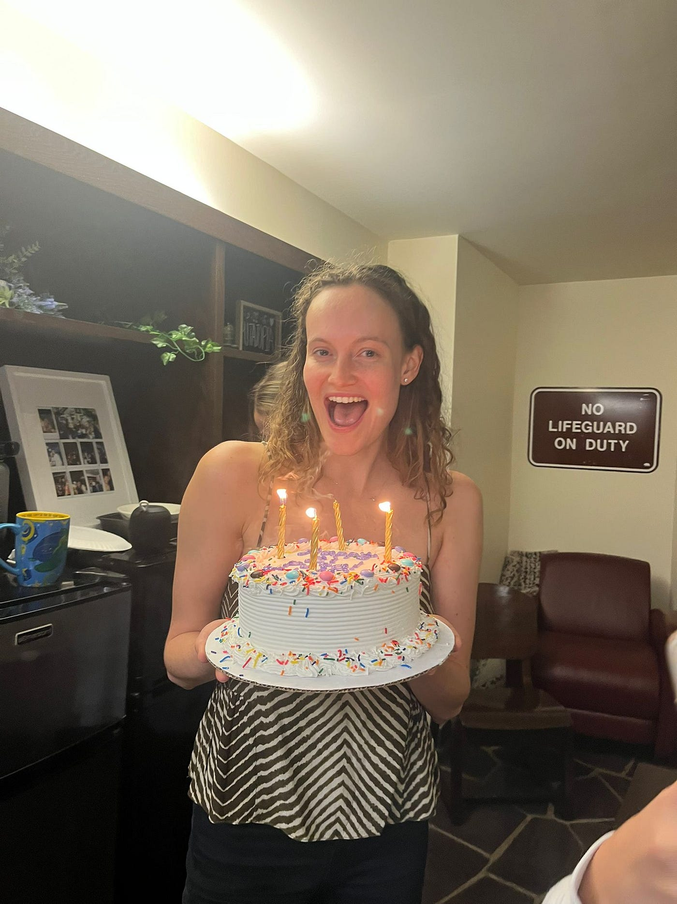
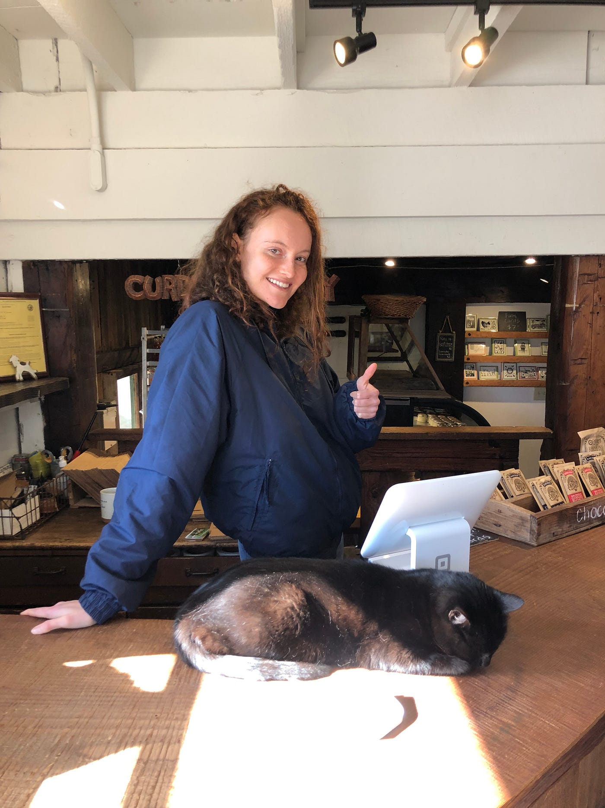
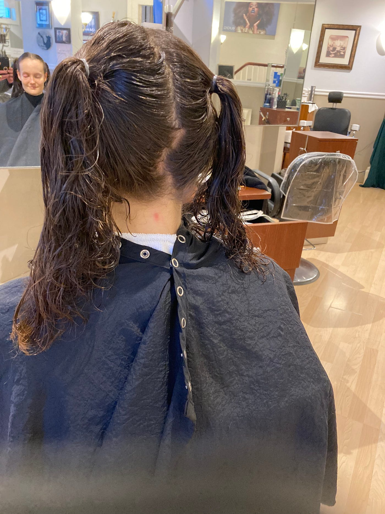
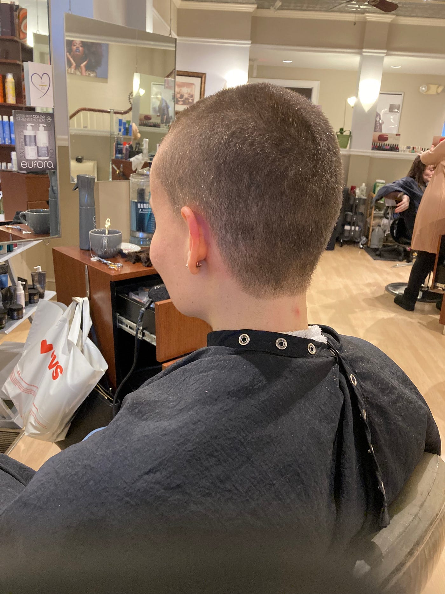
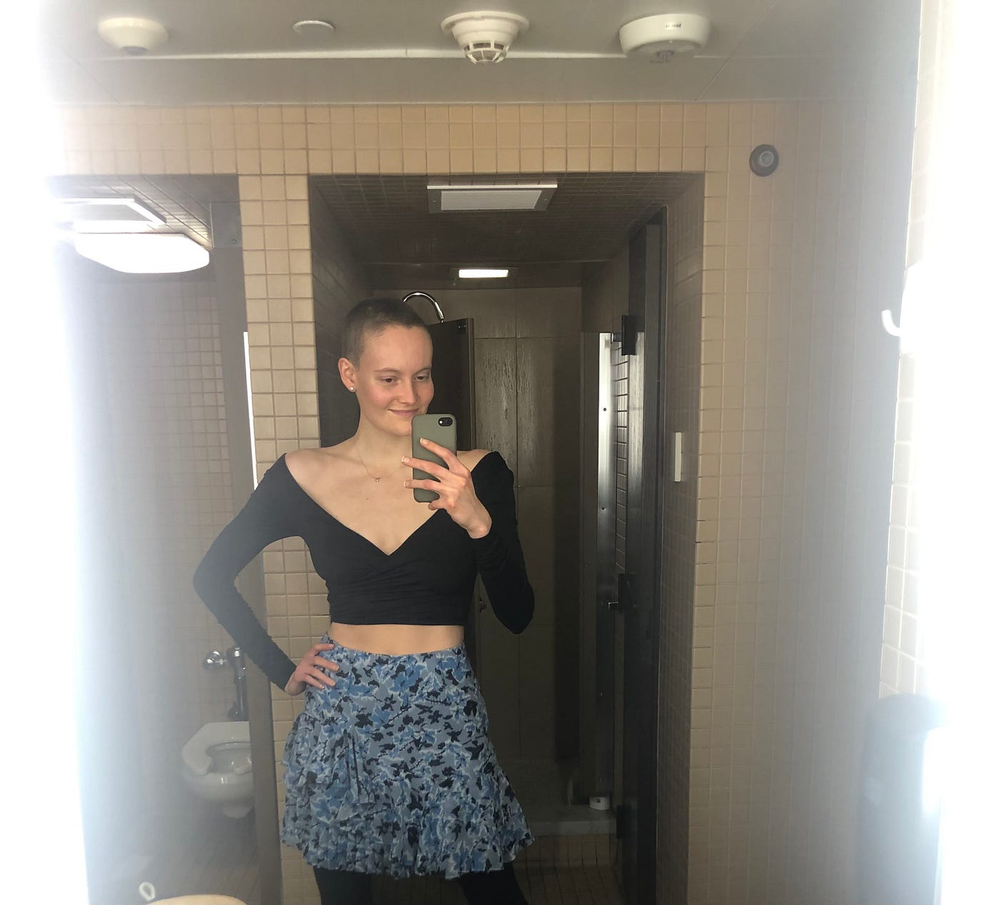
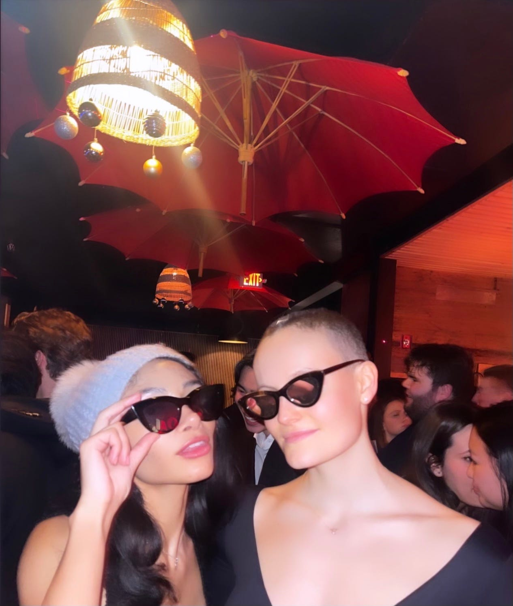
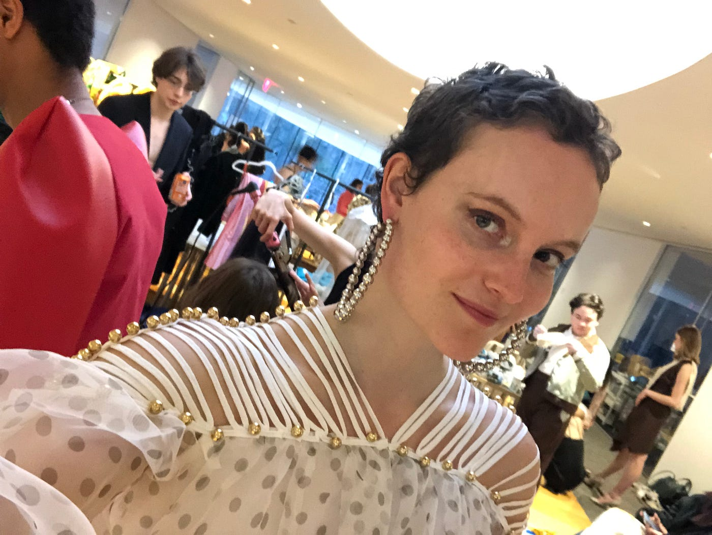
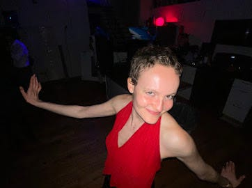
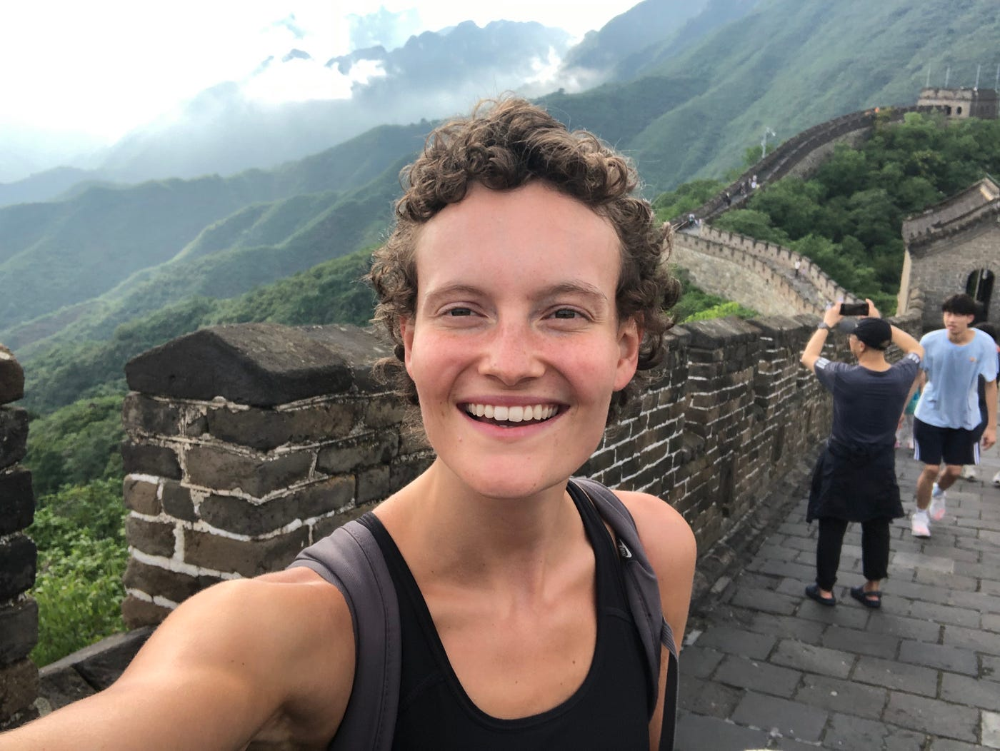
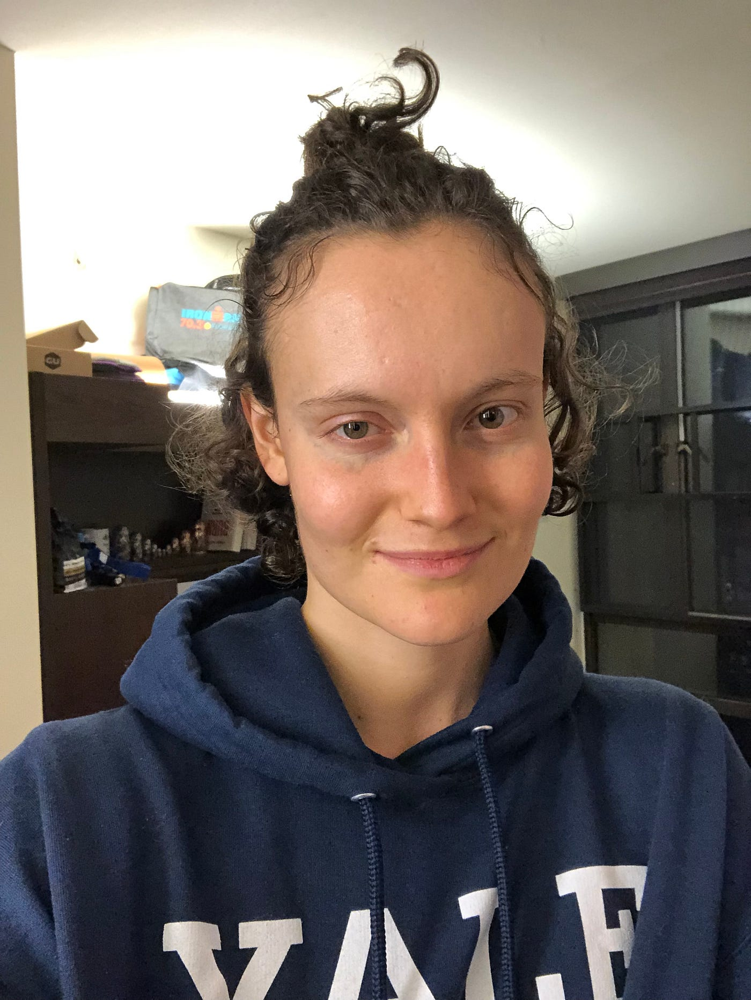

What it was like to shave my head
Jan 2024
Exactly one year ago, I went from shoulder-length to buzzcut. This is why I did it and what happened after.
I’ve never been adventurous with my hairstyle. I’d only ever dyed it twice — once over a summer, where I lightened it a few shades with spray (I only got the top part so when I braided it I looked like a zebra), and on my 21st birthday, when I did a semi-permanent ginger (that looked awesome).


Growing up, I’d ALWAYS had long hair. Down to my hips long. In high school, cutting it to chest length, and then shoulder length, was a huge deal.
During my second year of college, I started thinking about shaving my head. I’d even joked about it with my sister, but it always seemed like a distant thought: as a straight woman, I would default to “nah, I could never.” It would be too outrageous.
In January 2023, I had a hairdresser appointment coming up to re-do my ginger hair, which had faded way too quickly. But for some reason, I just couldn’t get the thought of shaving my head… well.. out of my head. The constant “what if I could do it?” haunted me.
My thinking was:
- I was curious. I wanted to know what life would be like without hair.
- I wanted to see if I could do it. For a straight woman, it’s quite a big deal.
- I wanted to know how people would react. A social experiment, if you will.
- By shaving my head, I would get to watch my hair grow into every possible length it could be. And that, to me, is absolutely beautiful.
About half an hour before the appointment, I called my sister. I was looking for at least one person to hype me up and I got it. I didn’t tell anyone else.
My heart started racing as I walked over and knocked on the hairdresser’s door, only to be greeted with… nothing. They were closed. HUH?! I literally had an appointment scheduled?
I told myself to stop freaking out and just go to the nearest hair salon. They take walk-ins, it would be fine. As I’m frantically googling haircut near me and making my way there, a hundred thoughts are racing through my head. “Maybe I could just shave it myself? No. That would be stupid. I don’t know how to do that and I don’t want a patchy head. What if this is a sign? What if I shouldn’t do it? Grace don’t be dumb.”
I go inside the second hair salon and… they don’t have any availability until the next day. I try to keep my cool and go back to google maps. There is no way I’m waiting until tomorrow, by then I will have changed my mind. I have to do it NOW while I’m hyped up and full of adrenaline.
At the third place, there’s no luck either. At this point, I’m really starting to reconsider. But there’s one more place just one block away and I tell myself that I just have to give it one more chance.
I walk in, and I’m greeted by an old lady. My heart sinks a bit — she is definitely going to judge me… what if her hands are shaky… I shouldn’t be here… I’ve literally never gone to a hairdresser, my sister always cuts my hair… besides, I have a sty on my left eye, and a massive pimple on the back of my neck, it’s definitely not the right time, maybe I should just wait…
She tells me she’s happy to cut my hair on the spot, and asks what I’d like.
“Buzz it.”
I sit down in the chair and listen to her convince me I’m going to look great, and promise me that she’s not just saying that because she has to. She is a total sweetheart, and tells me that my hair is barely long enough to donate, which is a big plus, so she ties it into two ponytails.
I close my eyes, not wanting to watch any of it, and feel the snap of the scissors on both sides. Then, I feel the BZZZZZ of the razor across my scalp, my neck tingling, bits of hair falling all over it. She washes it out and tells me that it’s done.



I open my eyes and… I’m in shock. I look… AWESOME. A totally different person. I almost cry. I run my hands through my… head(?) for the first time, and it feels so… spiky. So light.
I will never forget the first time I walked outside. And the first time I felt wind on my head, and rain, and snow… It felt freeing.
It definitely changed things. Over the next few weeks, here were the main things I experienced:
- People’s reactions varied greatly, but were ~95% extremely positive. Most of my close friends, family, and people I cared about were shocked and said I looked awesome. Completely RANDOM people, people that I wasn’t even remotely close to, came up to me and said I looked so cool. I’ve actually never gotten more compliments on my hair, ever. Of course, there were a few people that weren’t huge fans, which actually showed me what they prioritized and that maybe they weren’t the kind of people I wanted to be around. (When my mom found out, she just sighed and said “at least it will grow back”, and my dad thought it was a Snapchat filter. My sister later told me that my mom thought I had a mental breakdown, and I know she never agreed with what I did. Oh well. We just agree to disagree.)
- Many people thought I was gay. Especially in the first ~3 months post shave. I guess this is understandable. Someone that is now a close friend of mine that I met during this period later confessed that his first impression of me was: “Dammit. What pronouns should I use?” Lol.
- I got hit on way less by guys. This was kind of unfortunate but I also understand it. On the other hand, though, it was kind of nice to feel less harassed. And it meant that the guys I did attract were pretty awesome.
Other than the social experiment aspect, taking care of it was so, so easy. I LOVED this. It dried super quickly, I didn’t have to worry about brushing it or styling it… I will never go back to having long, long hair.
I have no regrets, and am super glad I did this (part of me still can’t believe I had the guts). I can honestly say I have never loved my hair more. I don’t mean I didn’t like it when it was long — I did — but now, I feel like I can fully appreciate it, any way that it looks. I remember when it first started to get curly, when I first started feeling it on my forehead, when it first started to get in the way of my swim cap… I notice, and love, every last detail about it. Raw. Real. Beautiful.





Right now, I’m in my man bun era: it’s long enough to put up into a half-ponytail, but not long enough to tie back all of it at once, which is very funny when I’m biking or running because I have to tie two mini ponytails, one above the other.
Watching it grow has brought me an IMMENSE amount of joy. Since it’s curly, it takes its sweet time. And I’m so happy about that; it means I can enjoy the process for longer. I haven’t cut or done anything to it since I went to that (fourth) hairdresser a year ago, and I’m going to keep letting it do its thang until it gets back to about shoulder length. And then… I’ll just pick the length I like best :)